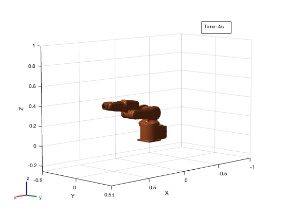
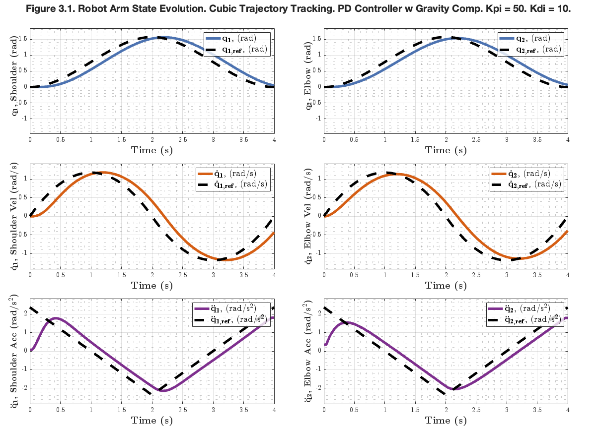
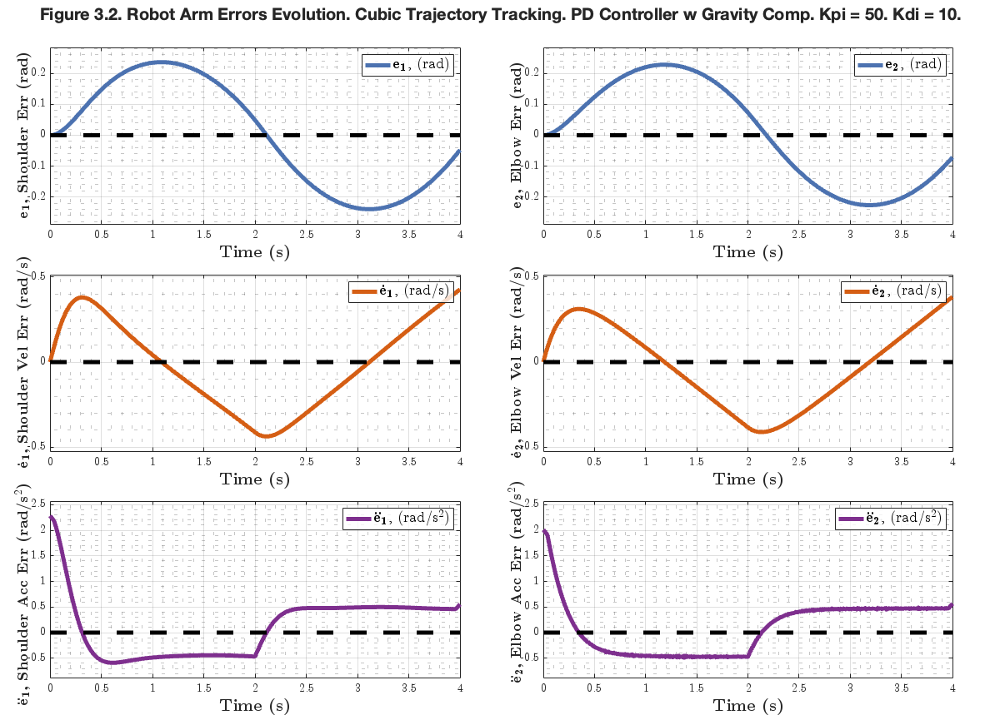
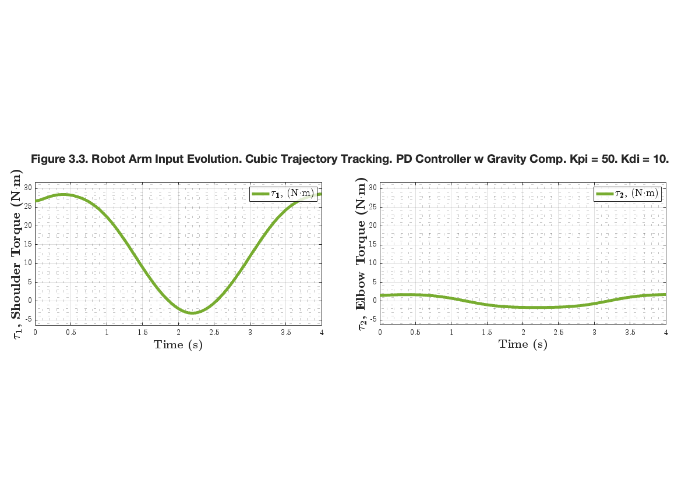

ROB599_HW3_P4
Simiulating a PD Controller for Robot Arm with Moving Trajectory.
Contents
- Cleanup
- Define Numerical Parameters of the System
- Define Initial Simulation Prameters
- Generate Target Trajectory
- Run Simulation
- Postprocess Data
- Animation
- Plot the Results
- Plot the System States and Reference
- Plot the System Errors
- Plot the Robot Arm Input Evolution
- Combined Tall Plot
- Helper Functions
Cleanup
clear
clc
close all
Define Numerical Parameters of the System
Inertia Terms
param.m1 = 7.848; param.m2 = 4.49; param.I1 = 0.176; param.I2 = 0.0411; % Geometry Terms param.l1 = 0.3; param.lc1 = 0.1554; param.lc2 = 0.0341; % Fundamental Constants param.g = 9.81; % Gains param.kp1 = 50; param.kd1 = 10; param.kp2 = 50; param.kd2 = 10; % Limits param.tau1Max = 50; param.tau1Min = -50; param.tau2Max = 50; param.tau2Min = -50;
Define Initial Simulation Prameters
% Initial Conditions
t = linspace(0,4,100000)';
x0 = [0;0;0;0];
tau = [0; 0];
Generate Target Trajectory
Cubic Polynomial Trajectory Waypoints
t_waypoints = [0; 2; 4]; q_waypoints = [0; pi/2; 0]; t_dot_waypoints = [0; 2; 4]; q_dot_waypoints = [0; 0; 0]; % Generate the Cubic Trajectories [q, qd, qdd, pp] = cubicpolytraj(q_waypoints', t_waypoints', t, 'VelocityBoundaryCondition', q_dot_waypoints'); % Import the Trajectory into State Space q1d_vec = q'; q1d_dot_vec = qd'; q1d_dot_dot_vec = qdd'; q2d_vec = q'; q2d_dot_vec = qd'; q2d_dot_dot_vec = qdd'; % Generate Stamped Target State Trajectory x_target = [q1d_vec, q1d_dot_vec, q2d_vec, q2d_dot_vec]; t_target = t; stamped_x_target = [x_target, t_target]';
Run Simulation
[tout, xout] = ode45(@(t, x) manipulator(t, x, @PDControllerGravComp, param, ... stamped_x_target), t, x0); % Compute Torques tau_values = postComputeTorques(tout, xout, @manipulator, @PDControllerGravComp, param, stamped_x_target);
Postprocess Data
Compute the Errors
error_vals_1 = computeErrors(xout(:,1), x_target(:,1)); error_vals_2 = computeErrors(xout(:,2),x_target(:,2)); error_vals_3 = computeErrors(xout(:,3), x_target(:,3)); error_vals_4 = computeErrors(xout(:,4), x_target(:,4)); error_vals =[error_vals_1, error_vals_2, error_vals_3, error_vals_4]; % Calculate accelerations dt = diff(tout); [q1_dot_dot, q2_dot_dot] = savitzkyGolayDerivative(tout, xout(:,2), xout(:,4)); % Calculate acceleration errors e1_dot_dot = computeErrors(q1_dot_dot, q1d_dot_dot_vec); e2_dot_dot = computeErrors(q2_dot_dot, q2d_dot_dot_vec); % Generate the Error Target Vector zero_vector = getZeroVec(tout);
Animation
robotAnimation(tout, xout);
Plot the Results
This section plots desired outputs.
angle_pose_color = [0.2980, 0.4471, 0.6902]; ref_color = [0, 0, 0]; velocity_color = [0.8359, 0.3682, 0.0784]; torque_color = [0.4667, 0.6745, 0.1882]; acceleration_color = [0.4940, 0.1840, 0.5560];
Plot the System States and Reference
figure('Position', [0, 0, 1200, 1000]); tLayout = tiledlayout(3,2,'Padding','Compact'); tLayout.Title.String = "Figure 3.1. Robot Arm State Evolution. Cubic Trajectory Tracking. PD Controller w Gravity Comp. Kpi = 50. Kdi = 10." + newline; tLayout.Title.FontSize = 20; tLayout.Title.FontWeight = 'bold'; % Poses % Plot q1 and q1ref nexttile; plot(tout, xout(:,1), 'Color', angle_pose_color, 'LineWidth', 5, ... 'DisplayName', '$\mathbf{q_1}$, (rad)'); hold on; plot(t', x_target(:,1), 'Color', ref_color, 'LineStyle', '--', ... 'LineWidth', 5, 'DisplayName', '$\mathbf{q_{1,ref}}$, (rad)'); hold off; setSubplotProperties(gca); y_lbl_handle = ylabel('\textbf{$\mathbf{q_1}$, Shoulder (rad)}', ... 'FontSize', 18, 'Interpreter', 'latex'); y_lbl_handle.Position(1) = -0.17; y_lbl_handle.Position(2) = 0.35; % Plot q2 and q2ref nexttile; plot(tout, xout(:,3), 'Color', angle_pose_color, 'LineWidth', 5, ... 'DisplayName', '$\mathbf{q_2}$, (rad)'); hold on; plot(t', x_target(:,3), 'Color', ref_color, 'LineStyle', '--', ... 'LineWidth', 5, 'DisplayName', '$\mathbf{q_{2,ref}}$, (rad)'); hold off; setSubplotProperties(gca); y_lbl_handle = ylabel('\textbf{$\mathbf{q_2}$, Elbow (rad)}', ... 'FontSize', 18, 'Interpreter', 'latex'); y_lbl_handle.Position(1) = -0.17; y_lbl_handle.Position(2) = 0.35; % Set common y-axis limits for angle plots [ymin, ymax] = getCommonYlim([xout(:,1); x_target(:,1)], [xout(:,3); x_target(:,2)]); nexttile(1); ylim([ymin, ymax]); nexttile(2); ylim([ymin, ymax]); % Velocities % Plot q1dot nexttile; plot(tout, xout(:,2), 'Color', velocity_color, 'LineWidth', 5, ... 'DisplayName', '$\mathbf{\dot{q}_1}$, (rad/s)'); hold on; plot(t', x_target(:,2), 'Color', ref_color, 'LineStyle', '--', ... 'LineWidth', 5, 'DisplayName', '$\mathbf{\dot{q}_{1,ref}}$, (rad/s)'); hold off; setSubplotProperties(gca); y_lbl_handle = ylabel('\textbf{$\mathbf{\dot{q}_1}$, Shoulder Vel (rad/s)}', ... 'FontSize', 18, 'Interpreter', 'latex'); y_lbl_handle.Position(1) = -0.17; % Plot q2dot nexttile; plot(tout, xout(:,4), 'Color', velocity_color, 'LineWidth', 5, ... 'DisplayName', '$\mathbf{\dot{q}_2}$, (rad/s)'); setSubplotProperties(gca); hold on; plot(t', x_target(:,2), 'Color', ref_color, 'LineStyle', '--', ... 'LineWidth', 5, 'DisplayName', '$\mathbf{\dot{q}_{2,ref}}$, (rad/s)'); hold off; y_lbl_handle = ylabel('\textbf{$\mathbf{\dot{q}_2}$, Elbow Vel (rad/s)}', ... 'FontSize', 18, 'Interpreter', 'latex'); y_lbl_handle.Position(1) = -0.17; % Set common y-axis limits for angular velocity plots [ymin, ymax] = getCommonYlim(xout(:,2), xout(:,4)); nexttile(3); ylim([ymin, ymax]); nexttile(4); ylim([ymin, ymax]); % Accelerations nexttile; plot(tout, q1_dot_dot, 'Color', acceleration_color, 'LineWidth', 5, ... 'DisplayName', '$\mathbf{\ddot{q}_1}$, (rad/s$^2$)'); hold on; plot(t', q1d_dot_dot_vec, 'Color', ref_color, 'LineStyle', '--', ... 'LineWidth', 5, 'DisplayName', '$\mathbf{\ddot{q}_{1,ref}}$, (rad/s$^2$)'); hold off; setSubplotProperties(gca); y_lbl_handle = ylabel('\textbf{$\mathbf{\ddot{q}_1}$, Shoulder Acc (rad/s$^2$)}', ... 'FontSize', 18, 'Interpreter', 'latex'); y_lbl_handle.Position(1) = -0.17; nexttile; plot(tout, q2_dot_dot, 'Color', acceleration_color, 'LineWidth', 5, ... 'DisplayName', '$\mathbf{\ddot{q}_2}$, (rad/s$^2$)'); hold on; plot(t', q2d_dot_dot_vec, 'Color', ref_color, 'LineStyle', '--', ... 'LineWidth', 5, 'DisplayName', '$\mathbf{\ddot{q}_{2,ref}}$, (rad/s$^2$)'); hold off; setSubplotProperties(gca); y_lbl_handle = ylabel('\textbf{$\mathbf{\ddot{q}_2}$, Elbow Acc (rad/s$^2$)}', ... 'FontSize', 18, 'Interpreter', 'latex'); y_lbl_handle.Position(1) = -0.17; % Set common y-axis limits for acceleration plots [ymin, ymax] = getCommonYlim([q1_dot_dot; q1d_dot_dot_vec], [q2_dot_dot; q2d_dot_dot_vec]); nexttile(5); ylim([ymin, ymax]); nexttile(6); ylim([ymin, ymax]); %print('ROB599-HW#3-Problem4-Fig3.1.png', '-dpng', '-r300');
Plot the System Errors
figure('Position', [0, 0, 1200, 1000]); tLayout = tiledlayout(3,2,'Padding','Compact'); tLayout.Title.String = "Figure 3.2. Robot Arm Errors Evolution. Cubic Trajectory Tracking. PD Controller w Gravity Comp. Kpi = 50. Kdi = 10." + newline; tLayout.Title.FontSize = 20; tLayout.Title.FontWeight = 'bold'; % Error % Plot e1 nexttile; plot(tout, error_vals(:,1), 'Color', angle_pose_color, 'LineWidth', 5, ... 'DisplayName', '$\mathbf{e_1}$, (rad)'); hold on; plot(tout, zero_vector, 'Color', ref_color, 'LineStyle', '--', ... 'LineWidth', 5, 'HandleVisibility', 'off'); hold off; setSubplotProperties(gca); y_lbl_handle = ylabel('\textbf{$\mathbf{e_1}$, Shoulder Err (rad)}', ... 'FontSize', 18, 'Interpreter', 'latex'); y_lbl_handle.Position(1) = -0.17; % Plot e2 nexttile; plot(tout, error_vals(:,3), 'Color', angle_pose_color, 'LineWidth', 5, ... 'DisplayName', '$\mathbf{e_2}$, (rad)'); hold on; plot(tout, zero_vector, 'Color', ref_color, 'LineStyle', '--', ... 'LineWidth', 5, 'HandleVisibility', 'off'); hold off; setSubplotProperties(gca); y_lbl_handle = ylabel('\textbf{$\mathbf{e_2}$, Elbow Err (rad)}', ... 'FontSize', 18, 'Interpreter', 'latex'); y_lbl_handle.Position(1) = -0.17; % Set common y-axis limits for angle plots [ymin, ymax] = getCommonYlim(error_vals(:,1), error_vals(:,3)); nexttile(1); ylim([ymin, ymax]); nexttile(2); ylim([ymin, ymax]); % Error Derivative % Plot e1 derivative nexttile; plot(tout, error_vals(:,2), 'Color', velocity_color, 'LineWidth', 5, ... 'DisplayName', '$\mathbf{\dot{e}_1}$, (rad/s)'); hold on; plot(tout, zero_vector, 'Color', ref_color, 'LineStyle', '--', ... 'LineWidth', 5, 'HandleVisibility', 'off'); hold off; setSubplotProperties(gca); y_lbl_handle = ylabel('\textbf{$\mathbf{\dot{e}_1}$, Shoulder Vel Err (rad/s)}', ... 'FontSize', 18, 'Interpreter', 'latex'); y_lbl_handle.Position(1) = -0.17; % Plot e2 derivative nexttile; plot(tout, error_vals(:,4), 'Color', velocity_color, 'LineWidth', 5, ... 'DisplayName', '$\mathbf{\dot{e}_2}$, (rad/s)'); hold on; plot(tout, zero_vector, 'Color', ref_color, 'LineStyle', '--', ... 'LineWidth', 5, 'HandleVisibility', 'off'); hold off; setSubplotProperties(gca); y_lbl_handle = ylabel('\textbf{$\mathbf{\dot{e}_2}$, Elbow Vel Err (rad/s)}', ... 'FontSize', 18, 'Interpreter', 'latex'); y_lbl_handle.Position(1) = -0.17; y_lbl_handle.Position(2) = 0.0; % Set common y-axis limits for angle plots [ymin, ymax] = getCommonYlim(error_vals(:,2), error_vals(:,4)); nexttile(3); ylim([ymin, ymax]); nexttile(4); ylim([ymin, ymax]); % Error Acceleration % e1_dot_dot nexttile; plot(tout, e1_dot_dot, 'Color', acceleration_color, 'LineWidth', 5, ... 'DisplayName', '$\mathbf{\ddot{e}_1}$, (rad/s$^2$)'); hold on; plot(tout, zero_vector, 'Color', ref_color, 'LineStyle', '--', ... 'LineWidth', 5, 'HandleVisibility', 'off'); hold off; setSubplotProperties(gca); y_lbl_handle = ylabel('\textbf{$\mathbf{\ddot{e}_1}$, Shoulder Acc Err (rad/s$^2$)}', ... 'FontSize', 18, 'Interpreter', 'latex'); y_lbl_handle.Position(1) = -0.17; % e2_dot_dot nexttile; plot(tout, e2_dot_dot, 'Color', acceleration_color, 'LineWidth', 5, ... 'DisplayName', '$\mathbf{\ddot{e}_2}$, (rad/s$^2$)'); hold on; plot(tout, zero_vector, 'Color', ref_color, 'LineStyle', '--', ... 'LineWidth', 5, 'HandleVisibility', 'off'); hold off; setSubplotProperties(gca); y_lbl_handle = ylabel('\textbf{$\mathbf{\ddot{e}_2}$, Elbow Acc Err (rad/s$^2$)}', ... 'FontSize', 18, 'Interpreter', 'latex'); y_lbl_handle.Position(1) = -0.17; % Set common y-axis limits for acceleration error plots [ymin, ymax] = getCommonYlim(e1_dot_dot, e2_dot_dot); nexttile(5); ylim([ymin, ymax]); nexttile(6); ylim([ymin, ymax]); %print('ROB599-HW#3-Problem4-Fig3.2.png', '-dpng', '-r300');
Plot the Robot Arm Input Evolution
figure('Position', [0, 0, 1200, 1000]); tLayout = tiledlayout(1,2,'Padding','Compact'); tLayout.Title.String = "Figure 3.3. Robot Arm Input Evolution. Cubic Trajectory Tracking. PD Controller w Gravity Comp. Kpi = 50. Kdi = 10." + newline; tLayout.Title.FontSize = 20; tLayout.Title.FontWeight = 'bold'; % Plot tau1 nexttile; plot(tout, tau_values(:,1), 'Color', torque_color, 'LineWidth', 5, ... 'DisplayName', '$\mathbf{\tau_1}$, (N$\mathbf{\cdot}$m)'); ax = gca; setSubplotProperties(ax); y_lbl_handle = ylabel('\textbf{$\mathbf{\tau_1}$, Shoulder Torque (N$\mathbf{\cdot}$m)}', ... 'FontSize', 22, 'Interpreter', 'latex'); y_lbl_handle.Position(1) = -0.15; % Plot tau2 nexttile; plot(tout, tau_values(:,2), 'Color', torque_color, 'LineWidth', 5, ... 'DisplayName', '$\mathbf{\tau_2}$, (N$\mathbf{\cdot}$m)'); ax = gca; setSubplotProperties(ax); y_lbl_handle = ylabel('\textbf{$\mathbf{\tau_2}$, Elbow Torque (N$\mathbf{\cdot}$m)}', ... 'FontSize', 22, 'Interpreter', 'latex'); y_lbl_handle.Position(1) = -0.15; y_lbl_handle.Position(2) = 12.5; % Set common y-axis limits for torque plots [ymin, ymax] = getCommonYlim(tau_values(:,1), tau_values(:,2)); nexttile(1); ylim([ymin, ymax]); nexttile(2); ylim([ymin, ymax]); % Adjust subplot aspect ratios nexttile(1); pbaspect([1 0.5 1]); nexttile(2); pbaspect([1 0.5 1]); print('ROB599-HW#3-Problem4-Fig3.3.png', '-dpng', '-r300');
Combined Tall Plot
figure('Position', [0, 0, 1200, 1200]); tLayout = tiledlayout(7,2,'Padding','Compact'); tLayout.Title.String = "Figure 3. Robot Arm. Cubic Trajectory Tracking. PD Controller w Gravity Comp. Kpi = 50. Kdi = 10." + newline; tLayout.Title.FontSize = 15; tLayout.Title.FontWeight = 'bold'; % Plots (1,1), (1,2) % Plot q1 and q1ref [ymin, ymax] = getCommonYlim([xout(:,1); x_target(:,1)], [xout(:,3); x_target(:,2)]); nexttile(1); ylim([ymin, ymax]); nexttile(2); ylim([ymin, ymax]); nexttile(1); plot(tout, xout(:,1), 'Color', angle_pose_color, 'LineWidth', 5, ... 'DisplayName', '$\mathbf{q_1}$, (rad)'); hold on; plot(t', x_target(:,1), 'Color', ref_color, 'LineStyle', '--', ... 'LineWidth', 5, 'DisplayName', '$\mathbf{q_{1,ref}}$, (rad)'); hold off; setSubplotProperties(gca); y_lbl_handle = ylabel('\textbf{$\mathbf{q_1}$, Shoulder (rad)}', ... 'FontSize', 30, 'Interpreter', 'latex'); y_lbl_handle.Position(1) = -0.12; y_lbl_handle.Position(2) = 0.8; legend('FontSize', 24, 'Location', 'northeast', 'Interpreter', 'latex'); % Plot q2 and q2ref nexttile(2); plot(tout, xout(:,3), 'Color', angle_pose_color, 'LineWidth', 5, ... 'DisplayName', '$\mathbf{q_2}$, (rad)'); hold on; plot(t', x_target(:,3), 'Color', ref_color, 'LineStyle', '--', ... 'LineWidth', 5, 'DisplayName', '$\mathbf{q_{2,ref}}$, (rad)'); hold off; setSubplotProperties(gca); y_lbl_handle = ylabel('\textbf{$\mathbf{q_2}$, Elbow (rad)}', ... 'FontSize', 30, 'Interpreter', 'latex'); y_lbl_handle.Position(1) = -0.12; y_lbl_handle.Position(2) = 0.8; legend('FontSize', 24, 'Location', 'northeast', 'Interpreter', 'latex'); % Plots (2,1), (2,2) % Plot e1 [ymin, ymax] = getCommonYlim(error_vals(:,1), error_vals(:,3)); nexttile(3); ylim([ymin, ymax]); nexttile(4); ylim([ymin, ymax]); nexttile(3); plot(tout, error_vals(:,1), 'Color', angle_pose_color, 'LineWidth', 5, ... 'DisplayName', '$\mathbf{e_1}$, (rad)'); hold on; plot(tout, zero_vector, 'Color', ref_color, 'LineStyle', '--', ... 'LineWidth', 5, 'HandleVisibility', 'off'); hold off; setSubplotProperties(gca); y_lbl_handle = ylabel('\textbf{$\mathbf{e_1}$, Shoulder Err (rad)}', ... 'FontSize', 30, 'Interpreter', 'latex'); y_lbl_handle.Position(1) = -0.12; legend('FontSize', 24, 'Location', 'northeast', 'Interpreter', 'latex'); % Plot e2 nexttile(4); plot(tout, error_vals(:,3), 'Color', angle_pose_color, 'LineWidth', 5, ... 'DisplayName', '$\mathbf{e_2}$, (rad)'); hold on; plot(tout, zero_vector, 'Color', ref_color, 'LineStyle', '--', ... 'LineWidth', 5, 'HandleVisibility', 'off'); hold off; setSubplotProperties(gca); y_lbl_handle = ylabel('\textbf{$\mathbf{q_2}$, Elbow Err (rad)}', ... 'FontSize', 30, 'Interpreter', 'latex'); y_lbl_handle.Position(1) = -0.12; legend('FontSize', 24, 'Location', 'northeast', 'Interpreter', 'latex'); % Plots (3,1), (3,2) % Plot q1dot [ymin, ymax] = getCommonYlim(xout(:,2), xout(:,4)); nexttile(5); ylim([ymin, ymax]); nexttile(6); ylim([ymin, ymax]); nexttile(5); plot(tout, xout(:,2), 'Color', velocity_color, 'LineWidth', 5, ... 'DisplayName', '$\mathbf{\dot{q}_1}$, (rad/s)'); hold on; plot(t', x_target(:,2), 'Color', ref_color, 'LineStyle', '--', ... 'LineWidth', 5, 'DisplayName', '$\mathbf{\dot{q}_{1,ref}}$, (rad/s)'); hold off; setSubplotProperties(gca); y_lbl_handle = ylabel('\textbf{$\mathbf{\dot{q}_1}$, Shoulder Vel (rad/s)}', ... 'FontSize', 30, 'Interpreter', 'latex'); y_lbl_handle.Position(1) = -0.12; legend('FontSize', 24, 'Location', 'northeast', 'Interpreter', 'latex'); % Plot q2dot nexttile(6); plot(tout, xout(:,4), 'Color', velocity_color, 'LineWidth', 5, ... 'DisplayName', '$\mathbf{\dot{q}_2}$, (rad/s)'); setSubplotProperties(gca); hold on; plot(t', x_target(:,2), 'Color', ref_color, 'LineStyle', '--', ... 'LineWidth', 5, 'DisplayName', '$\mathbf{\dot{q}_{2,ref}}$, (rad/s)'); hold off; y_lbl_handle = ylabel('\textbf{$\mathbf{\dot{q}_2}$, Elbow Vel (rad/s)}', ... 'FontSize', 30, 'Interpreter', 'latex'); y_lbl_handle.Position(1) = -0.12; legend('FontSize', 24, 'Location', 'northeast', 'Interpreter', 'latex'); % Plots (4,1), (4,2) % e1 derivative [ymin, ymax] = getCommonYlim(error_vals(:,2), error_vals(:,4)); nexttile(7); ylim([ymin, ymax]); nexttile(8); ylim([ymin, ymax]); nexttile(7); plot(tout, error_vals(:,2), 'Color', velocity_color, 'LineWidth', 5, ... 'DisplayName', '$\mathbf{\dot{e}_2}$, (rad/s)'); hold on; plot(tout, zero_vector, 'Color', ref_color, 'LineStyle', '--', ... 'LineWidth', 5, 'HandleVisibility', 'off'); hold off; setSubplotProperties(gca); y_lbl_handle = ylabel('\textbf{$\mathbf{\dot{e}_1}$, Shoulder Vel Err (rad/s)}', ... 'FontSize', 30, 'Interpreter', 'latex'); y_lbl_handle.Position(1) = -0.12; legend('FontSize', 24, 'Location', 'northeast', 'Interpreter', 'latex'); % e2 derivative nexttile(8); plot(tout, error_vals(:,4), 'Color', velocity_color, 'LineWidth', 5, ... 'DisplayName', '$\mathbf{\dot{e}_2}$, (rad/s)'); hold on; plot(tout, zero_vector, 'Color', ref_color, 'LineStyle', '--', ... 'LineWidth', 5, 'HandleVisibility', 'off'); hold off; setSubplotProperties(gca); y_lbl_handle = ylabel('\textbf{$\mathbf{\dot{e}_2}$, Elbow Vel Err (rad/s)}', ... 'FontSize', 30, 'Interpreter', 'latex'); y_lbl_handle.Position(1) = -0.12; legend('FontSize', 24, 'Location', 'northeast', 'Interpreter', 'latex'); % Plots (5,1), (5,2) % Accelerations [ymin, ymax] = getCommonYlim([q1_dot_dot; q1d_dot_dot_vec], [q2_dot_dot; q2d_dot_dot_vec]); nexttile(9); ylim([ymin, ymax]); nexttile(10); ylim([ymin, ymax]); % q1_dot_dot nexttile(9); plot(tout, q1_dot_dot, 'Color', acceleration_color, 'LineWidth', 5, ... 'DisplayName', '$\mathbf{\ddot{q}_1}$, (rad/s$^2$)'); hold on; plot(t', q1d_dot_dot_vec, 'Color', ref_color, 'LineStyle', '--', ... 'LineWidth', 5, 'DisplayName', '$\mathbf{\ddot{q}_{1,ref}}$, (rad/s$^2$)'); hold off; setSubplotProperties(gca); y_lbl_handle = ylabel('\textbf{$\mathbf{\ddot{q}_1}$, Shoulder Acc (rad/s$^2$)}', ... 'FontSize', 30, 'Interpreter', 'latex'); y_lbl_handle.Position(1) = -0.12; legend('FontSize', 24, 'Location', 'northeast', 'Interpreter', 'latex'); % q2_dot_dot nexttile(10); plot(tout, q2_dot_dot, 'Color', acceleration_color, 'LineWidth', 5, ... 'DisplayName', '$\mathbf{\ddot{q}_2}$, (rad/s$^2$)'); hold on; plot(t', q2d_dot_dot_vec, 'Color', ref_color, 'LineStyle', '--', ... 'LineWidth', 5, 'DisplayName', '$\mathbf{\ddot{q}_{2,ref}}$, (rad/s$^2$)'); hold off; setSubplotProperties(gca); y_lbl_handle = ylabel('\textbf{$\mathbf{\ddot{q}_2}$, Elbow Acc (rad/s$^2$)}', ... 'FontSize', 30, 'Interpreter', 'latex'); y_lbl_handle.Position(1) = -0.12; legend('FontSize', 24, 'Location', 'northeast', 'Interpreter', 'latex'); % Plots (6,1), (6,2) % e1_dot_dot [ymin, ymax] = getCommonYlim(e1_dot_dot, e2_dot_dot); nexttile(11); ylim([ymin, ymax]); nexttile(12); ylim([ymin, ymax]); nexttile(11); plot(tout, e1_dot_dot, 'Color', acceleration_color, 'LineWidth', 5, ... 'DisplayName', '$\mathbf{\ddot{e}_1}$, (rad/s$^2$)'); hold on; plot(tout, zero_vector, 'Color', ref_color, 'LineStyle', '--', ... 'LineWidth', 5, 'HandleVisibility', 'off'); hold off; setSubplotProperties(gca); y_lbl_handle = ylabel('\textbf{$\mathbf{\ddot{e}_1}$, Shoulder Acc Err (rad/s$^2$)}', ... 'FontSize', 30, 'Interpreter', 'latex'); y_lbl_handle.Position(1) = -0.12; legend('FontSize', 24, 'Location', 'northeast', 'Interpreter', 'latex'); % e2_dot_dot nexttile(12); plot(tout, e2_dot_dot, 'Color', acceleration_color, 'LineWidth', 5, ... 'DisplayName', '$\mathbf{\ddot{e}_2}$, (rad/s$^2$)'); hold on; plot(tout, zero_vector, 'Color', ref_color, 'LineStyle', '--', ... 'LineWidth', 5, 'HandleVisibility', 'off'); hold off; setSubplotProperties(gca); y_lbl_handle = ylabel('\textbf{$\mathbf{\ddot{e}_2}$, Elbow Acc Err (rad/s$^2$)}', ... 'FontSize', 30, 'Interpreter', 'latex'); y_lbl_handle.Position(1) = -0.12; legend('FontSize', 24, 'Location', 'northeast', 'Interpreter', 'latex'); % Plots for Torques (7,1), (7,2) [ymin, ymax] = getCommonYlim(tau_values(:,1), tau_values(:,2)); nexttile(13); ylim([ymin, ymax]); nexttile(14); ylim([ymin, ymax]); % tau1 nexttile(13); plot(tout, tau_values(:,1), 'Color', torque_color, 'LineWidth', 5, ... 'DisplayName', '$\mathbf{\tau_1}$, (N$\mathbf{\cdot}$m)'); setSubplotProperties(gca); y_lbl_handle = ylabel('\textbf{$\mathbf{\tau_1}$, Shoulder Trq (N$\mathbf{\cdot}$m)}', ... 'FontSize', 30, 'Interpreter', 'latex'); y_lbl_handle.Position(1) = -0.12; legend('FontSize', 24, 'Location', 'northeast', 'Interpreter', 'latex'); % tau2 nexttile(14); plot(tout, tau_values(:,2), 'Color', torque_color, 'LineWidth', 5, ... 'DisplayName', '$\mathbf{\tau_2}$, (N$\mathbf{\cdot}$m)'); setSubplotProperties(gca); y_lbl_handle = ylabel('\textbf{$\mathbf{\tau_2}$, Elbow Trq (N$\mathbf{\cdot}$m)}', ... 'FontSize', 30, 'Interpreter', 'latex'); y_lbl_handle.Position(1) = -0.12; y_lbl_handle.Position(2) = 0.0; legend('FontSize', 24, 'Location', 'northeast', 'Interpreter', 'latex'); % Save the Plot %set(gcf, 'PaperUnits', 'inches'); %set(gcf, 'PaperPosition', [0 0 36 48]); %print('ROB599-HW#3-Problem4.png', '-dpng', '-r300');
Helper Functions
Computes the Torque Values at Give State Vector
function tau_values = postComputeTorques(tout, xout, model_ref, controller_ref, param, ref) num_steps = length(tout); tau_values = zeros(num_steps, 2); for i = 1:num_steps [~, tau] = model_ref(tout(i), xout(i,:)', controller_ref, param, ref); tau_values(i,:) = tau'; end end % Computes the Error Vector function error_vals = computeErrors(x_actual, x_ref) error_vals = x_ref - x_actual; end % Generates a Zero Vector function zero_vector = getZeroVec(t_out) zero_vector = zeros(size(t_out)); end % Returns Y-axis Limits for Two Sets of Data function [ymin, ymax] = getCommonYlim(data1, data2) ymin = min(min(data1), min(data2)); ymax = max(max(data1), max(data2)); range = ymax - ymin; ymin = ymin - 0.1 * range; ymax = ymax + 0.1 * range; end % Sets Subplot Properties function setSubplotProperties(ax) grid(ax, 'on'); grid(ax, 'minor'); ax.TickLabelInterpreter = 'latex'; ax.FontSize = 14; xlabel(ax, '\textbf{Time (s)}', 'FontSize', 20, 'Interpreter', 'latex'); lgd = legend(ax, 'FontSize', 18, 'Location', 'northeast', 'Interpreter', 'latex'); % Set semi-transparent background lgd.BoxFace.ColorType = 'truecoloralpha'; lgd.BoxFace.ColorData = uint8([255 255 255 200]'); end function [accel1, accel2] = savitzkyGolayDerivative(t, vel1, vel2) % Parameters for Savitzky-Golay filter window_length = 2001; % Must be odd polynomial_order = 1; % Compute accelerations using Savitzky-Golay filter accel1 = gradient(smooth(vel1, window_length, 'sgolay', polynomial_order), t); accel2 = gradient(smooth(vel2, window_length, 'sgolay', polynomial_order), t); end